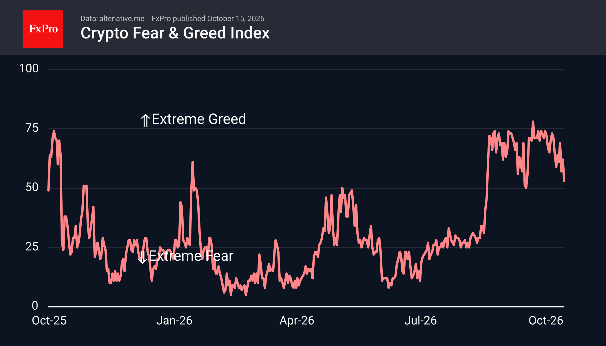
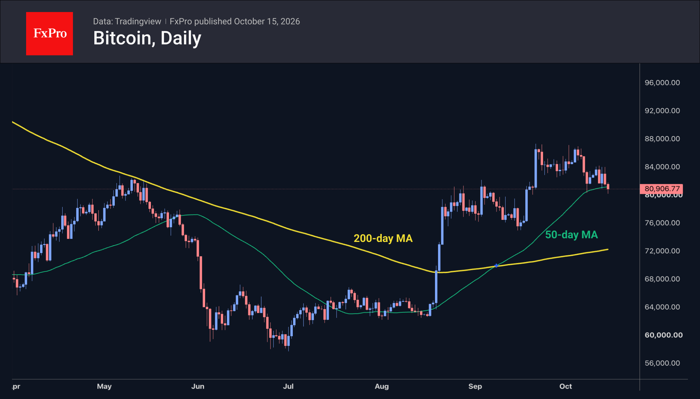

Market Overview
The crypto market accelerated its decline on Wednesday following a sell-off in big tech stocks and a surge in the likelihood of interest rate hikes after core inflation exceeded expectations. Market capitalisation fell to $2.72T (−2.8%), its lowest level in nearly a month. Of the top 100 coins by market capitalisation, only six are rising. Among the most liquid coins, declines range from −0.4% (Tron) and −1.5% (Hyperliquid) to −9.1% (Filecoin) and −8.5% (SushiSwap).
The sentiment index plummeted to 53, a new low since 17 September. As with Bitcoin, market sentiment is undergoing a crucial test of its readiness to turn the page on the bear market. Remaining in the upper half of the scale would indicate a fundamental shift in market sentiment, given that the index spent only a single day in that range between October 2025 and August 2026.
Bitcoin fell on Wednesday after US inflation data exceeded forecasts. However, even before the news was published, the leading cryptocurrency was rapidly sold off as it attempted to climb above $84K. The ensuing sell-off of risky assets and a slide amid low liquidity pushed BTC below its 50-day moving average, reaching a low of $80.4K. As trading began in Europe, the balance shifted back in favour of buyers, and the price rose closer to the signal line at $81.3K. The bulls are currently in control of the situation, and market participants are interested in buying the dips.



News Background
The crypto market's decline may continue due to reduced investment in crypto ETFs and high yields on US government bonds, Wintermute warns.
USDT stablecoin reserves on exchanges have fallen to an annual low, according to CryptoQuant. Meanwhile, the ratio of Bitcoin volume to stablecoins is close to an annual high.
The crypto market is at the start of a new bull cycle, said Strategy founder Michael Saylor. His optimism stems from banks' interest in digital assets, the development of securities tokenisation and cryptocurrency lending, which will help attract more capital to the market.
The major Alpenglow update will be launched on the Solana mainnet on 21 October. It is expected to reduce the time taken for final transaction confirmation from 12.8 seconds to 150 milliseconds.
The FxPro Analyst Team